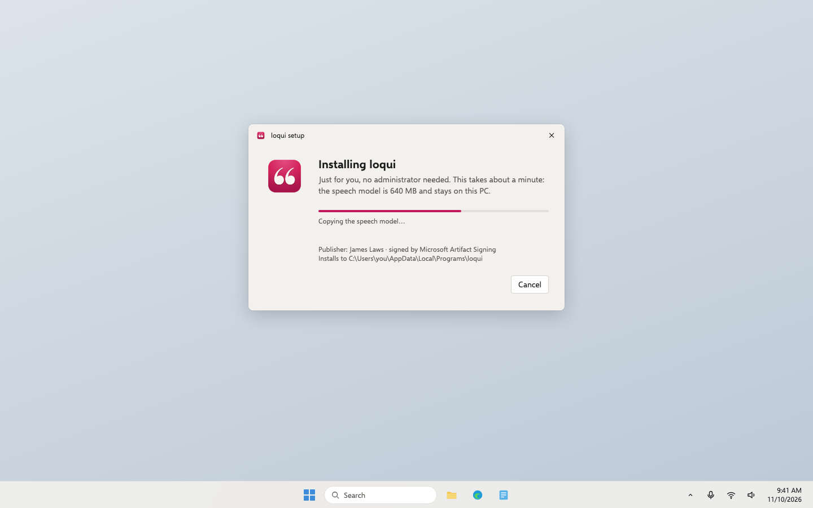
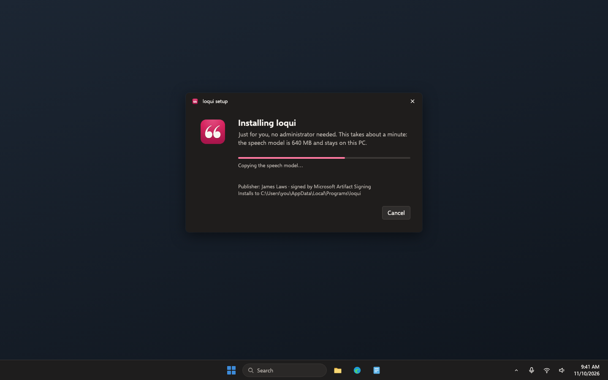
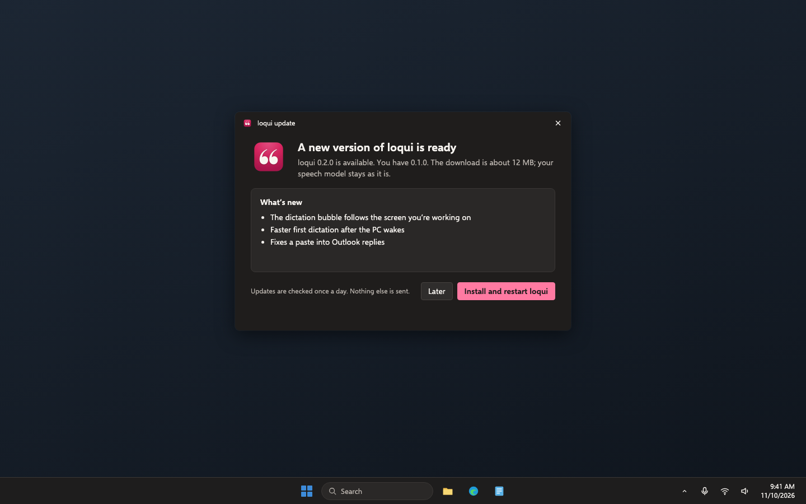

Loqui · Plan · Draft 1 · November 10, 2026
Loqui for Windows, step 5: signed installer, updates and a test channel
Loqui for Windows installs without "unknown publisher" warnings, keeps itself up to date, gets every change to a test PC first, and can go back to the last good version.
What approving this does. You agree to a Microsoft signing account at $9.99 a month in your name, which you set up yourself (about 20 minutes, then Microsoft checks your ID). A builder then makes the installer, signed updates, the test channel, and the promote and roll-back buttons. It accepts my recommendations below unless you change one.
Your words
November 10, to Aiva"I need you to have it spin up a plan to create a Windows version of this product."
What changes
- Signed in your name. The installer and the app carry your verified name through Microsoft's signing service, so Windows shows "James Laws" as the publisher instead of an unknown one, and new Windows 11 PCs with Smart App Control don't block it. For the first few weeks Windows may still show a "Windows protected your PC" notice while it learns the app is trusted; signing is what lets that happen.
- A real installer. For your account only, so no administrator is needed. It includes the speech model (about 500 MB to download once). It appears in Start and in Windows' Installed apps. Uninstalling asks whether to also delete your history and settings, as the Mac's uninstall does.
- Updates by themselves. loqui checks once a day and from Check for updates. A new version shows what's new and installs in one click. Updates are small (about 12 MB) because the speech model stays. Like the Mac's, every update is signed with a key only Loqui's releases have, and loqui refuses any update that isn't.
- A test channel (our staging). Every change merged into the project becomes a signed test version within about half an hour. A PC with "Get test versions" switched on gets it. Everyone else only gets versions you approve.
- Approve and go back. Your Ready to ship approval publishes the exact test version you tried, unchanged, to everyone. If a version turns out bad, Roll back sends every PC back to the last good one automatically.
- Built by GitHub, not on a computer here. Releases are built and signed on GitHub's Windows computers. The signing keys never sit on the Mini or your MacBook.
- The Mac is untouched. Windows versions are numbered and listed separately, and don't take over the Mac's "Download the latest release" link (step 6 updates the links).
Who it's for: public, through the test channel only until step 6.
Screens, before and after
"After" is the Windows look drawn in a separate page and photographed. The Mac's update prompt is Sparkle's own window and isn't pictured. Desktop app, so there is no phone size. Click any picture to see it big.
Installing


An update is ready


Settings: updates and test versions

Empty, loading, error and no permission
- Empty: no update: "loqui is up to date" after Check for updates.
- Loading: the update window shows download progress, then restarts loqui.
- Error: offline, or GitHub unreachable: the daily check fails quietly and dictation is unaffected; Check for updates says "Couldn't reach the update server. Try again later." An update with a bad signature is refused with "This update couldn't be verified, so it wasn't installed."
- No permission: none; installing and updating need no administrator.
Risk
Risky: money, secrets. Money: a new $9.99 a month Microsoft signing account in your name. Secrets: the signing identity and a new update key; whoever held the update key could push an update every copy would accept. What keeps it safe: GitHub signs through a short-lived login with no stored password, the update key lives only as a locked GitHub secret with your backup in 1Password, publishing to everyone needs your approval, and the plan gets one Codex safety review before it ships.
Decisions, with my recommendation
Approving this draft says yes to each recommendation unless you change one.
1. How Windows releases are signed
- Recommended: Microsoft's Artifact Signing service, $9.99 a month. You create an Azure account, verify your identity as an individual (photo ID), and an agent connects GitHub to it.
- A yearly certificate from a company like DigiCert or Sectigo, $150 to $300 a year, which now has to live on a hardware key and is hard to use from GitHub.
- Don't sign. Every download shows "unknown publisher", and Smart App Control blocks it outright on new PCs.
- Only the Microsoft Store, which signs for free but handles updates its own way.
Why: it's the cheapest way to get your name on the app that works from GitHub with no hardware key. Microsoft lists sign-up for individuals in the US and Canada; if it's closed when you apply, the yearly certificate is the fallback.
2. The update key
- Recommended: a new key just for Windows updates, kept only as a locked GitHub secret, with a backup you save in 1Password.
- No separate key; trust the download and the Windows signature alone.
Why: it matches the Mac's double check (Apple's signature plus Sparkle's key) and is what the security notes promise users.
3. How a PC gets test versions
- Recommended: a "Get test versions" switch in Settings, off by default. Your Windows test machine turns it on.
- A separate "loqui test" app installed beside the normal one.
Why: one app to look after, and turning it off simply waits for the next approved version.
4. Your data when uninstalling
- Recommended: ask whether to also delete history and settings, as the Mac's uninstall script does.
- Always keep them.
- Always delete them.
Why: the same choice the Mac gives, and nothing is deleted without asking.
5. The Microsoft Store
- Recommended: not now. Consider it after launch as a second way in.
- Publish in the Store at the same time.
Why: the Store reviews apps that watch the keyboard closely and runs its own updates, which would split the testing; the GitHub download comes first.
Not in this plan
- The download page and README (step 6). Until then, test versions are on GitHub's releases page only.
- Any change to how the Mac is built, signed or updated.
- The Microsoft Store (decision 5).
Checkpoints
- Set up signing (you, about 20 minutes): create the Azure account and Artifact Signing account and submit your ID, following the agent's step-by-step note. When Microsoft approves it, tell the Lead; an agent connects it to GitHub. SIGN-01
- Install the signed test version (Windows test machine): uninstall the old test build, download the newest pre-release from GitHub, run it. No administrator prompt and no "unknown publisher"; the file's properties show James Laws. Dictate once. SIGN-01, SIGN-02, INST-01, INST-03, PRIV-03
- It updates itself (Windows test machine): turn on Get test versions. When the Lead merges a small change, within the hour the update window appears; install it and check your dictionary is still there. UPD-01 to UPD-04, CHAN-01, CHAN-02
- Approve and go back (GitHub): approve the test version in the Promote step; the stable list shows that exact version. The Lead runs a Roll back drill and your test PC returns to the previous version. Then uninstall, choosing to keep your history. CHAN-03 to CHAN-05, INST-02
For the agents
Build notes
- Checks to turn green: SIGN-01, SIGN-02, INST-01 to INST-03, UPD-01 to UPD-04, CHAN-01 to CHAN-05, PRIV-03. Earlier steps' checks keep passing.
- Existing code to reuse:
release.sh(publish the release before the feed; feed served fromdocs/on Pages at a stable address, never "latest", because "latest" skips pre-releases),uninstall.sh(ask before deleting data), the vault note on Loqui hosting and updates (where release keys live; never copy keys anywhere). - Installer: Tauri's NSIS bundle,
installMode: currentUser. Two artifacts per version: the full installer (with the model) for downloads, and an update installer without the model for the feed. The model lives in its own folder with a version file; installers add it only when missing or changed and the update installer never removes it. Uninstaller asks about%LOCALAPPDATA%\Loqui. - Signing: Azure Artifact Signing from GitHub Actions through
azure/loginwith a federated credential (OIDC; no client secret), signing the app, its DLLs, both installers and the uninstaller, with a timestamp. CI verifies every signature (signtool verify /pa) and refuses to publish anything unsigned. The signing account, identity validation and certificate profile are James's; the agent writes him a step-by-step note and does the GitHub side. - Updates: Tauri's updater plugin with the new public key built in; feeds at
https://jameslaws.github.io/loqui/windows/stable.jsonand…/beta.json, chosen by the Settings switch. Checks once a day and on demand. The private key is a GitHub Actions secret in areleaseenvironment; generated without being printed, backed up by James in 1Password, then the local copy deleted. - Channels and workflows:
windows-release.yml: on merge to main, build, sign, publish a GitHub pre-release taggedwindows-v0.x.y-beta.Nwith--latest=false, then commitdocs/windows/beta.json(release first, feed second).windows-promote.yml: manual, behind a GitHub environment that needs James's approval; copies the tested pre-release's exact files (checksums compared) to awindows-v0.x.yrelease, still--latest=false, and writesstable.json.windows-rollback.yml: rebuilds the last good tag's code as the next patch number and promotes it, because installed copies only move forward. - Shared interfaces and owners:
docs/windows/*.jsonfeeds (owned here; step 6 adds the download page's use ofstable.json).settings.jsongainschannel(owned here). The Mac'sdocs/appcast.xmlandv*tags are not touched. - Privacy check: PRIV-03 extends step 2's network watch over a full install, start, update check and update: only
jameslaws.github.io(the feed) and GitHub's release download hosts appear, and only during update checks and downloads. - Data and outside services: Azure Artifact Signing (James's account), GitHub Releases and Pages. No user data leaves the PC.
- Can't be undone: a published update reaches every PC on that channel; that's why stable needs James's approval and Roll back exists. Microsoft's identity validation is in James's name. Gets the Codex safety review before it ships (risky plan).
- Staging and rollback: staging is the test channel (beta feed and pre-releases); production is the stable feed. Record both, and the Promote and Roll back workflows, in PROJECT.md.